???
???
Noch keine gesicherte Überlieferung.
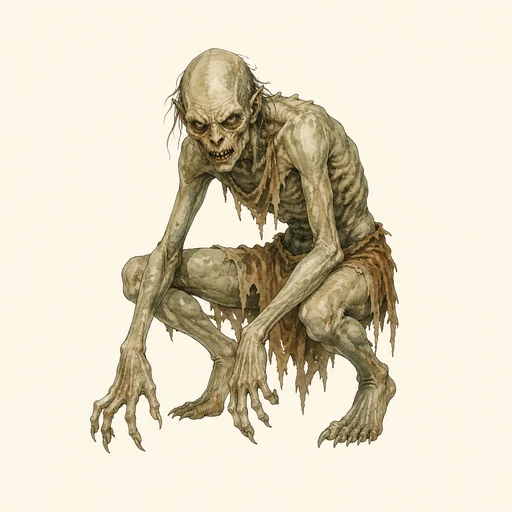
KreaturenarchivAleria · Gräber, Ruinen und unheilige Orte · Archivblatt III / 02
Untote Körper und nekromantisch verdorbene Wesen
Nekrophagen sind Tote, die durch Nekromantie, Flüche oder widernatürliche Umstände in eine verzerrte Form des Daseins zurückkehren. Zwischen willenloser Hülle und planendem Lich umfasst die Gattung sehr verschiedene Grade von Verfall, Hunger und Bewusstsein.
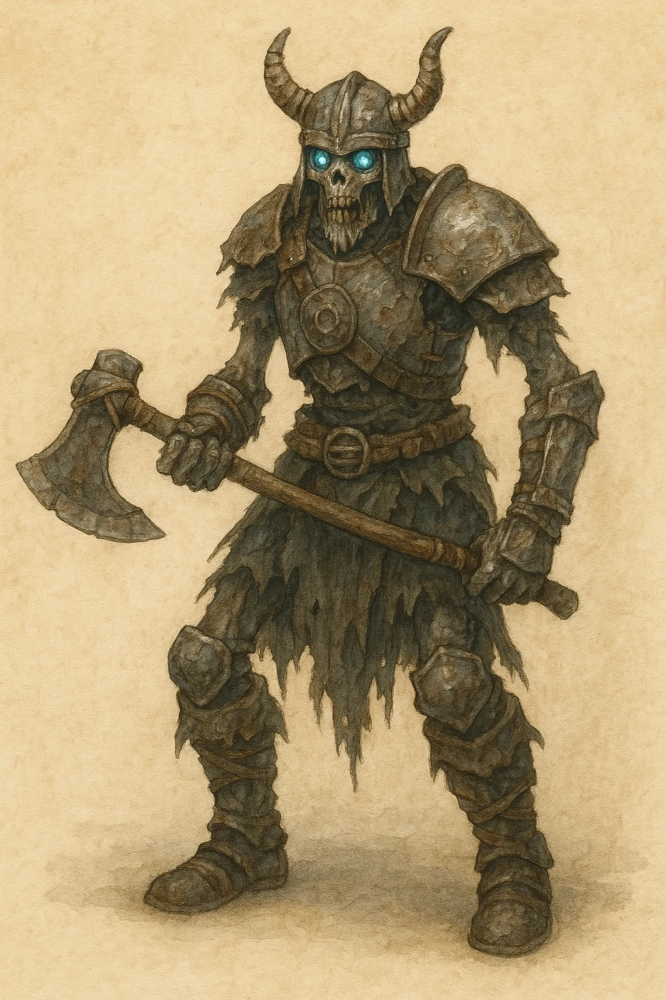
„Wo die Toten ohne Namen liegen, findet die Nacht genug Körper, um wieder aufzustehen.“Überlieferter Warnspruch der Totengräber
Sechs Merkmale · Skala 1–10
Das Nekrophagendiagramm trennt den Antrieb eines Untoten von seinem Eigenwillen. Ein Zombie kann einen hohen Jagdtrieb bei kaum vorhandenem Willen besitzen, während ein Lich beide Werte bewusst lenkt.
Quelle der Einordnung: Aus körperlicher Gewalt, Hunger oder Auftrag, verbliebenem Eigenwillen, untoter Zähigkeit und nekrotischer Wirkung der Gattung abgeleitet
Überlieferte Erscheinungsformen
Die verzeichneten Unterarten unterscheiden sich in Ursprung, Bewusstsein und körperlichem Verfall. Ein letzter Archivplatz bleibt für eine noch unbestimmte Form offen.
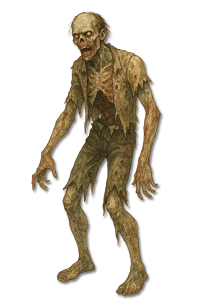
Wiederbelebter Körper
Eine meist willenlose Hülle, die einfachen Befehlen, Geräuschen oder rastlosem Hunger folgt.
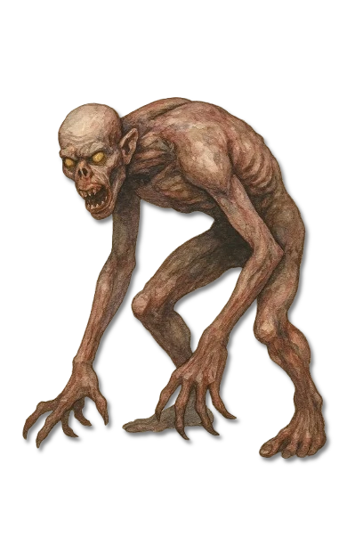
Aas- und Grabjäger
Rasche Nekrophagen, die Friedhöfe und Schlachtfelder nach Fleisch absuchen und in Gruppen besonders gefährlich werden.
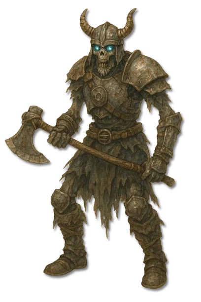
Grabhügel Norrnaighs
Ein bewaffneter Grabwächter, dessen Wille an Hügel, Beigaben und alte Schwüre gebunden bleibt.
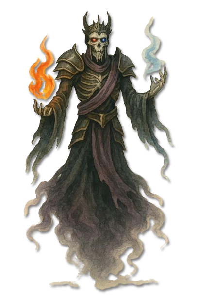
Bewusster Nekromant
Ein machtvoller Untoter, der Verstand und Zauberkraft bewahrt und häufig aus verborgenen Ruinen oder Katakomben wirkt.
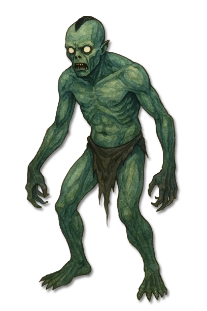
Küsten und Gewässer
Ein vom Wasser gezeichneter Toter, der an Flussmündungen, Sümpfen und alten Schiffswracks umgeht.
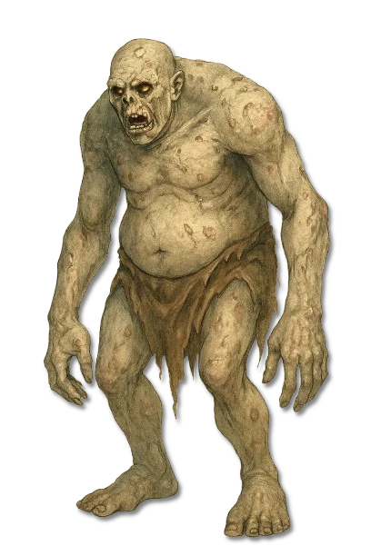
Verdorbene Leichenform
Ein schwer entstellter Nekrophag, dessen Körper von Hunger, Magie und unkontrolliertem Wachstum umgeformt wurde.
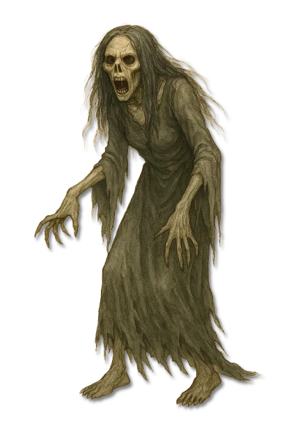
Gruftgebundener Jäger
Eine lauernde Form, die enge Grabstätten nutzt und Beute mit überraschender Kraft in die Dunkelheit zieht.
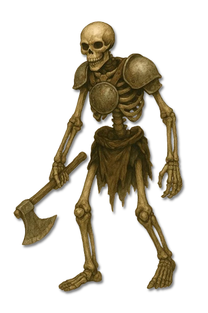
Belebtes Gebein
Durch Magie bewegte Knochen, die ohne Schmerz und Müdigkeit einfache Wacht- oder Kampfaufträge erfüllen.
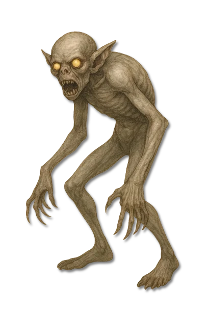
Dunstgebundener Untoter
Ein schwer greifbarer Nekrophag, der seine Gestalt im Nebel verbirgt und aus geringer Entfernung zuschlägt.
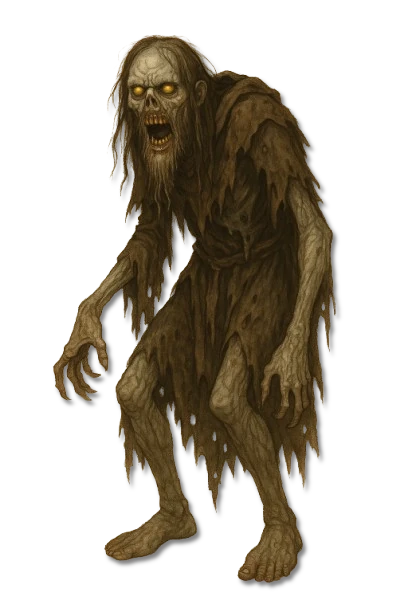
Willensgebundener Toter
Ein Verstorbener, der aus Pflicht, Rache oder einem gebrochenen Versprechen in seinen Körper zurückkehrt.

Verdorbene Paktgestalt
Eine untote Hexe, deren dunkler Pakt Körper und Seele in eine menschlich-vogelartige Jagdform verwandelt hat.
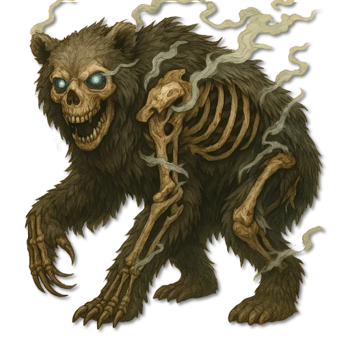
Wiederbelebtes Tier
Ein durch Nekromantie oder Fluch wiederbelebtes Tier, dessen Instinkte zu unermüdlicher Jagd und Grabwacht verdorben wurden.
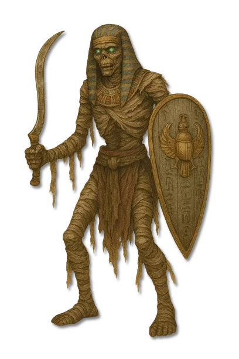
Rituell erhaltener Toter
Ein konservierter Leichnam, dessen Fluch an Grabritus, Beigaben oder die Verletzung seiner Ruhestätte gebunden ist.
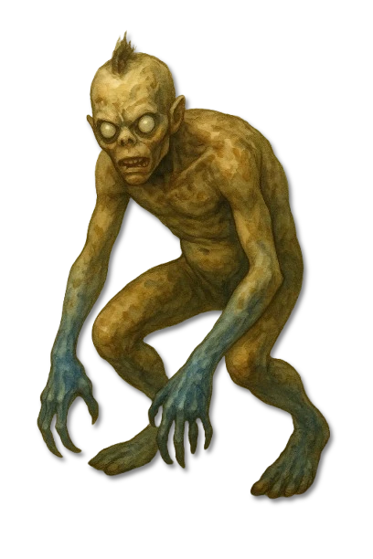
Sumpf und Moor
Ein feuchtigkeitsgezeichneter Nekrophag, der reglos zwischen Schlamm und Schilf auf nahe Beute wartet.
???
Noch keine gesicherte Überlieferung.
Nekrophagen entstehen, wenn der Tod durch Magie, Fluch oder andere widernatürliche Umstände gestört wird. Ihr Dasein gilt als sichtbares Zeichen dafür, dass ein Ort, ein Körper oder ein Begräbnis seine vorgesehene Ruhe verloren hat.
Nicht jeder Untote ist geistlos. Während Zombies und Skelette oft nur Befehle oder Triebe ausführen, können Widergänger, Draugr und Lichs Erinnerung, Absicht und eine erschreckende Geduld bewahren.
Viele Kulturen betrachten sorgfältige Totenriten, Segnungen und ein geordnetes Leben als Schutz vor nekrophager Wiederkehr. Ob fehlender Glaube allein einen Toten verwundbar macht, bleibt unter Gelehrten umstritten; sicher ist, dass ungeweihte Massengräber und gestörte Bestattungen das Risiko erhöhen.
Wo Nekrophagen wiederholt auftreten, liegt oft eine gemeinsame Ursache vor: ein wirkender Nekromant, ein alter Fluch, infernale Verderbnis oder ein Ort, an dem Tod und Magie einander über lange Zeit durchdrungen haben.
Die Entstehung entscheidet über den Antrieb. Ein befohlener Körper kann mit dem Ende seines Beschwörers zusammenbrechen, während ein durch Rache gebundener Widergänger erst ruht, wenn sein Anlass beseitigt ist.
Göttliche und natürliche Magie, geweihte oder silberne Waffen und reinigendes Feuer gehören zu den verlässlichsten Mitteln. Bei körperlichen Untoten verhindert Feuer häufig, dass verdorbenes Gewebe weiterkämpft oder sich erneut erhebt.
Da jede Unterart eigene Schwächen besitzt, sollte eine Jagd mit Beobachtung beginnen. Nach einem Kampf müssen Körper, Grabstätte und magische Ursache gereinigt werden. Geistliche, Hexenjäger und Gelehrte der Nekromantie werden deshalb oft gemeinsam hinzugezogen.
Draugr werden vor allem mit den Grabhügeln Norrnaighs verbunden. Versunkene finden sich an Küsten, Flussmündungen, Sümpfen und Schiffswracks. Ghule und Scheusale folgen häufig den Spuren großer Schlachten, Friedhöfe und Massengräber.
Lichs meiden offene Wege und wählen Ruinen, Türme, Katakomben oder andere magiereiche Orte. Die Umgebung verrät oft mehr als eine einzelne Spur: ausbleibende Tiere, verdorbene Luft und ungewöhnlich unversehrte Leichen weisen auf fortwirkende Nekromantie hin.